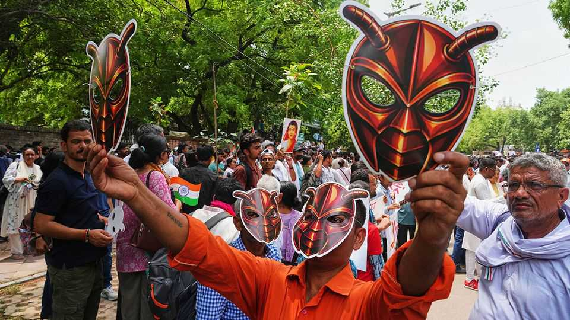

Can India’s cockroach party become a political movement?
The government is betting that the answer is no
June 11th 2026

ABHIJEET DIPKE, the founder of the Cockroach Janta Party, predicted that when he landed at Delhi airport he would be arrested and the protest he had planned would be banned. That might have sounded a bit dramatic for a man who, a month ago, was posting memes from his home in Boston, in America. But Mr Dipke has accidentally found himself at the helm of a movement. His party, which began as a joke in response to a nasty comment made by the Supreme Court of India’s chief justice about the country’s jobless young, has attracted millions of followers. As it went viral, the Indian government’s first response was to try to squash it.
Once Mr Dipke landed on June 6th, however, it became clear that the government had adroitly changed tack. The Delhi police swiftly granted him permission to hold the rally. A jetlagged Mr Dipke, a 30-year-old communications professional, proceeded to a protest site in central Delhi. By midday there were perhaps one or two thousand people there, mostly young, many filming themselves. They drummed and chanted slogans, calling for the education minister to resign because of scandals involving botched exams. Mr Dipke held aloft an autobiography by B.R. Ambedkar, a Dalit leader, and gave impromptu speeches that were inaudible. At one point he appeared to faint, hardly surprising given the sweltering heat.
The grievances that Mr Dipke has tapped into run deep and wide. Like many young people across India, the protesters were angry about a lack of jobs and an education system that can often seem designed to crush their aspirations. Many complained that those in power are unaccountable, and suppress dissent. Naveen, who had travelled from Jaipur, said the problem was not the education minister but “the whole system”. Arvind Singh, from Chandigarh, said that the nascent party had given angry but fearful youngsters the confidence to speak out. “When something gets too big organically, it comes and bites you back,” he said. Both wore cockroach masks. “We are cockroaches!” the crowd chanted.
Mr Dipke has promised more rallies across India. He has plenty of discontent to draw on and a powerful symbol, which counts for something in Indian politics. But his movement is inchoate. It has no real organisation (the turnout in Delhi was surprisingly small), it lacks a coherent message, and it is not clear that Mr Dipke will have the skills to turn a burst of anger into a movement. Those in power seem to doubt that it will be any more than a minor pest. It is up to the cockroaches to prove them wrong. ■
Stay on top of our India coverage by signing up to Essential India, our free weekly newsletter.